Orvieto
Orvieto's Duomo announces the town from the first glance, its mosaic Gothic facade catching the light from across the piazza. A short walk away, the Torre del Moro rises above the narrow streets, its clock face readable from below through the tower's own stone window. The Palazzo del Popolo holds its Romanesque arches and crenellations just as they've stood for centuries, and from a rooftop nearby, the whole town's terracotta roofline spreads out toward the Umbrian countryside below the cliff. Down in the old town, an alley strung with medieval banners leads past Bottega Vera, an enoteca and alimentari trading since 1938, and a board of truffle crostini, cured meats, and local cheeses makes as good a case as any to sit down for a while. The edge of town closes the visit properly: a tree-lined walkway along the old city walls, the patchwork countryside spreading out below, and a wide panorama from the cliff's edge that's hard to look away from.
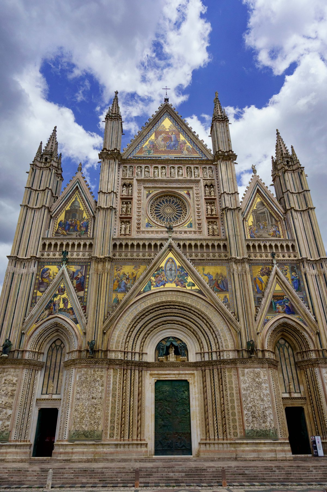
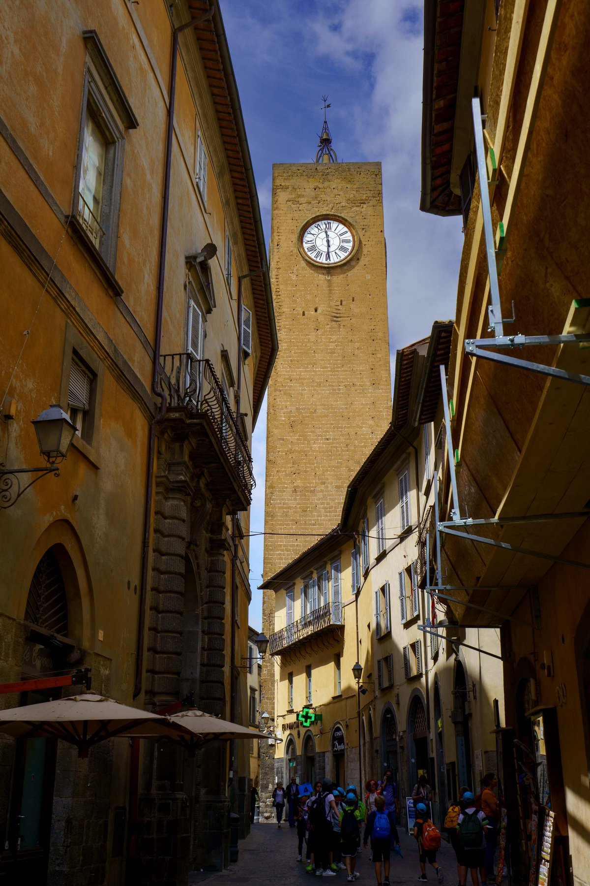
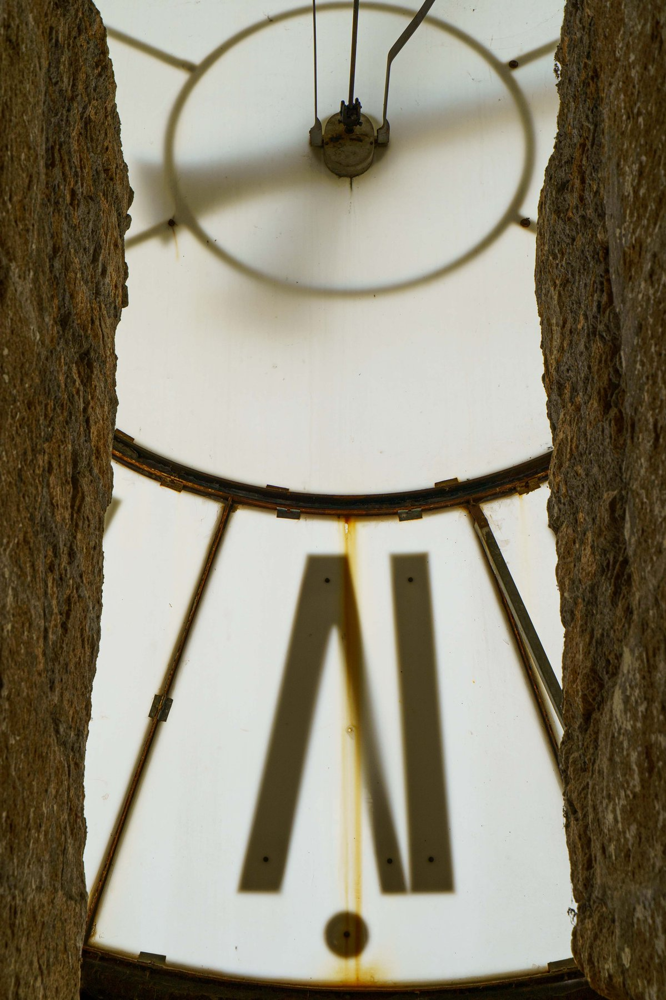
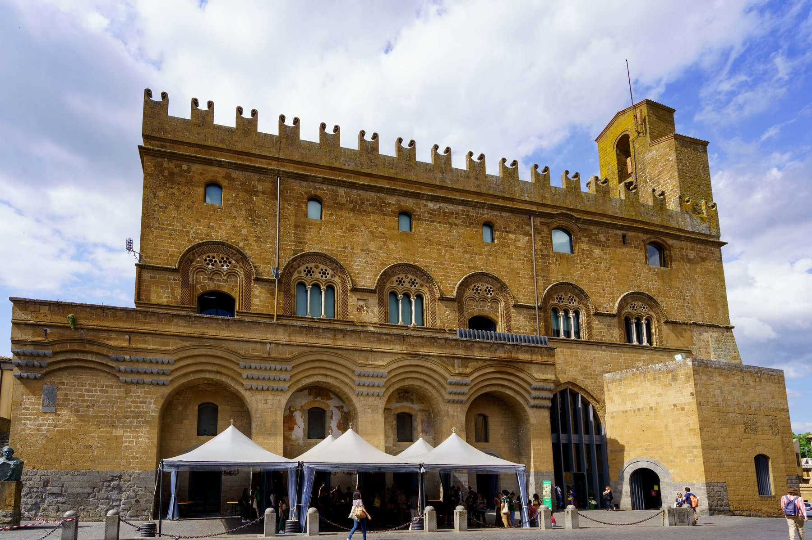
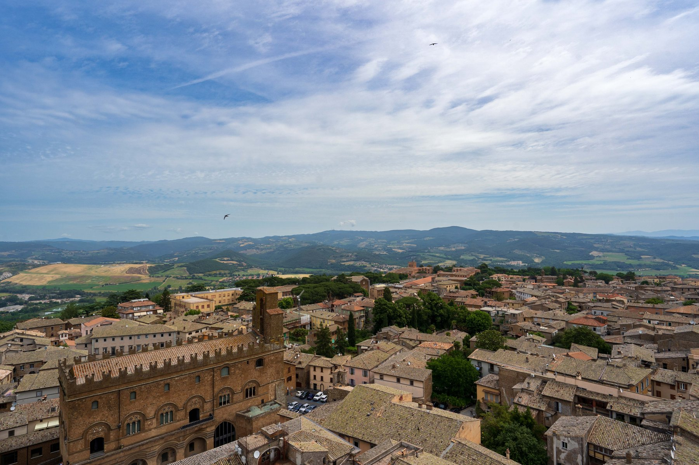
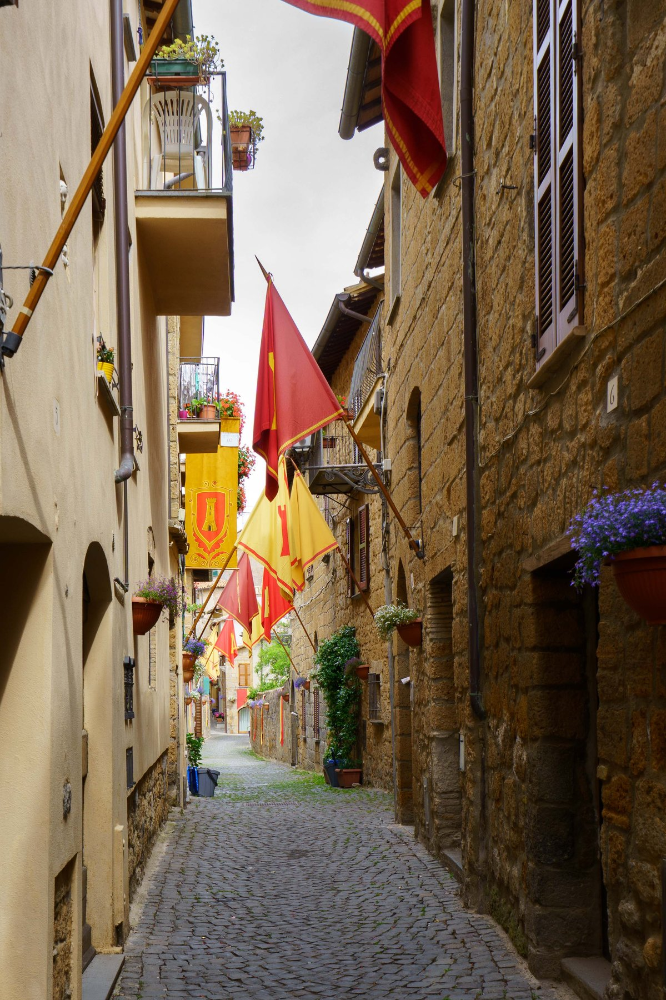
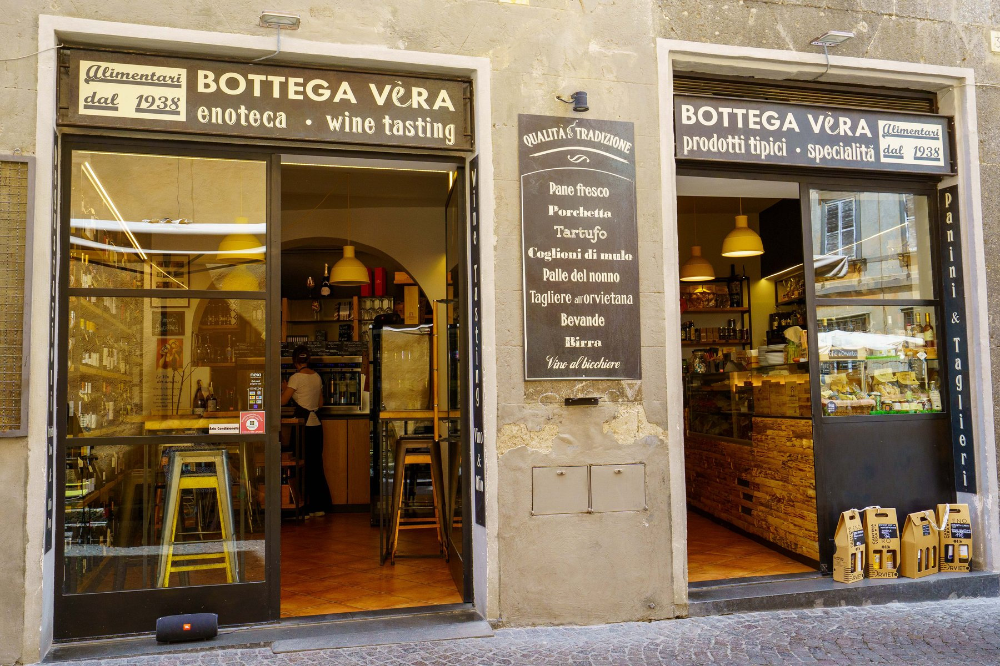
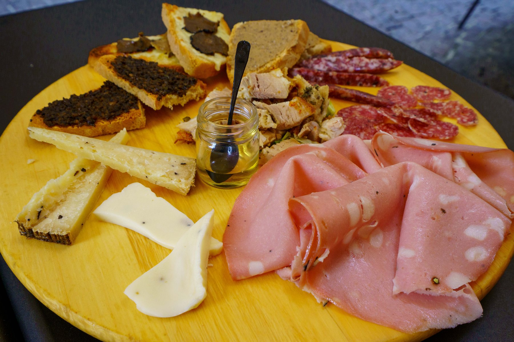
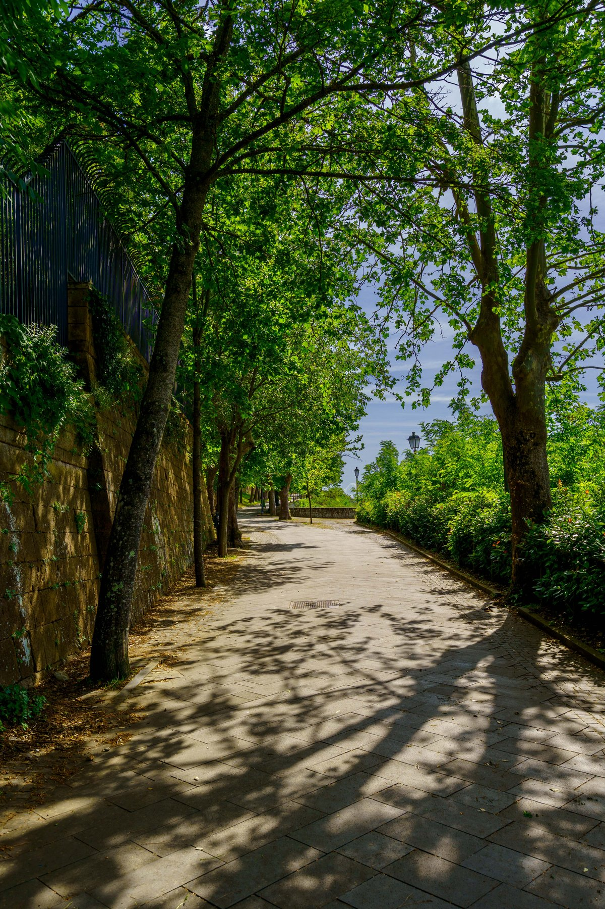
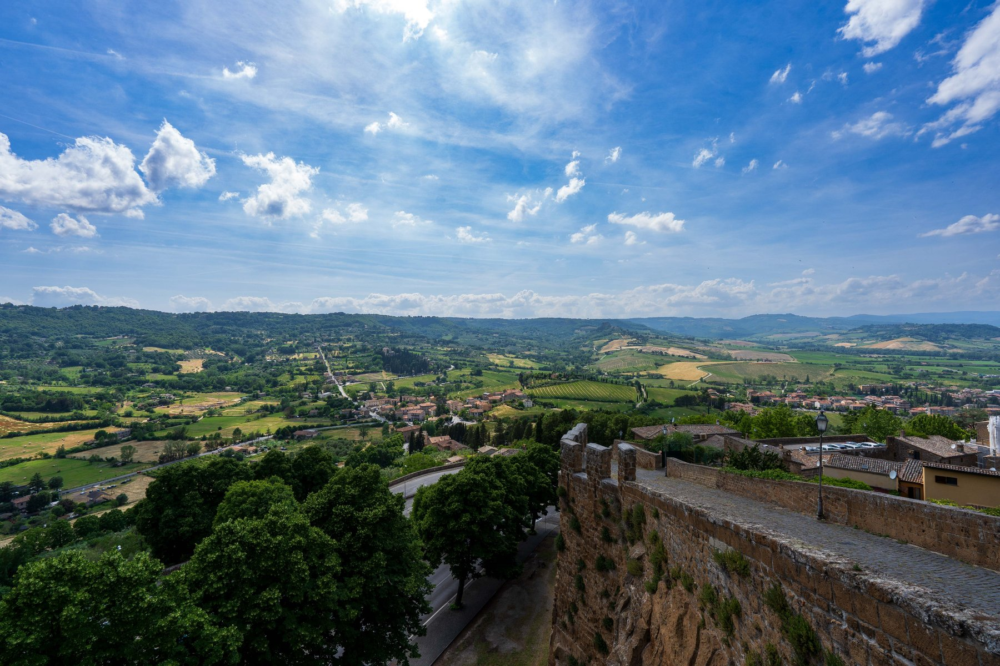
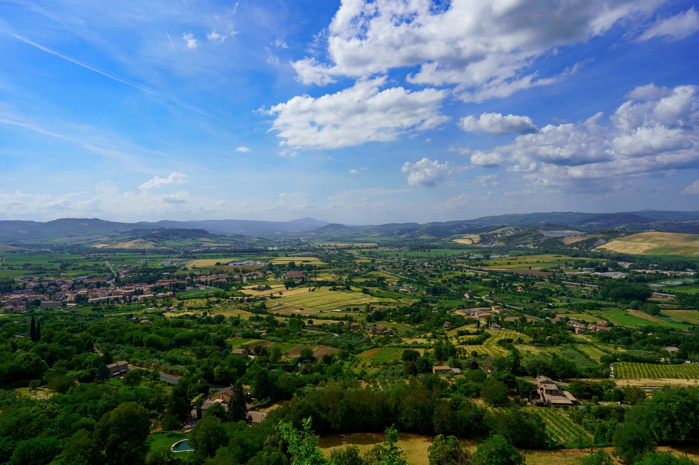